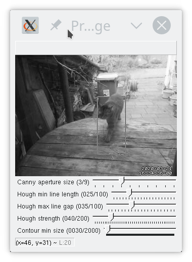
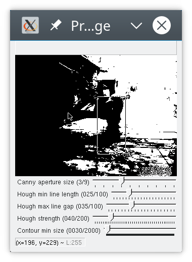
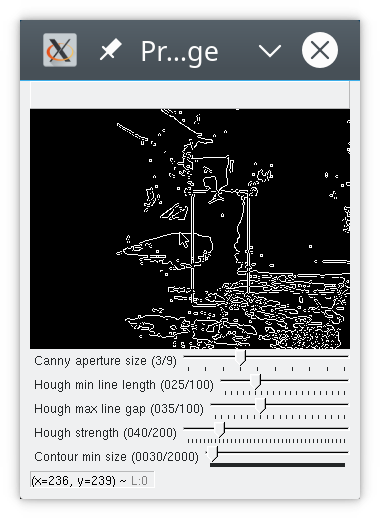
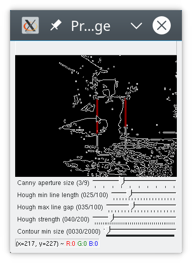

Catflap, continued
New developments in cat flap automation – continuing on from my first cat flap-related post. In the last post, I described how I installed the Raspberry Pi and camera, and installed motion on it to capture images when motion is detected.
In this post, I’ll set up some infrastructure for receiving and processing images captured by motion: – some very basic opencv code for locating the area where motion was detected; training a simple statistical model to decide heuristically whether a cat is approaching the cat flap; and then putting things together so motion can call my code.
So you’ll get a hodgepodge of different technologies, none of them described at the level of detail I’d like to give them. All three (OpenCV in Python, Statmodels in OpenCV, and Python’s asyncio) have thorough and official documentation as well as some code samples and Stackoverflow questions that show how people use them. However, actually understanding how they work and how to use them correctly does not seem as straightforward as it could be.
When I put it all together, I now have a “cat flap daemon” that runs on the pi and listens on a (UDP) port. Motion (the open source motion detection software) is also running, and is configured to send a UDP message to the cat flap daemon when it takes a picture. The daemon then reads that picture, locates the area where motion was detected, and applies a statistical model to decide whether this pictures shows a cat approaching the flap.
I have (at least) three more things to do before the project is complete:
- Decide whether the cat approaching is carrying a mouse
- Figure out how the pi can keep the cat flap closed
- Add an IR LED so the camera can see at night
I’ll tackle those next – stay tuned.
Processing images with opencv in python
After a few days of running motion and just capturing images, I had a good sample set, so I started extending the simple listing code I’d written.
Motion generates (among others) two types of events:
motion detected: 3494 changed pixels 48 x 76 at 272 38saved /home/pi/pictures/11-20200414141730-00.jpg
I wanted to use the coordinates where motion was detected for a basic heuristic that tells me
whether a cat is approaching (as opposed to a cat leaving, or some non-cat-related movement). As it is, I get
the coordinates in two ways: first from the motion detected message and then from the box that motion draws
on the image it saves. I played with both, and ended up going with the box for now, mainly because I messed up
and lost a bunch of the motion messages but I still had all the images and wanted to start working with them.
Another reason is that motion uses different coordinates from opencv; as far as I can tell, the motion messages describe the extent (48 x 76 pixels in the example above) around the centre of movement (272 38). With opencv, I more usually get boundaries or a bounding box. On top of that, the coordinates reported by motion appear to be shifted compared to what I get from opencv. Since I want to do more processing with opencv, I need locations to be usable there, preferably without a lot of places where I can introduce bugs.
Finding a box using opencv is not hard. A box is basically a set of four straight lines, and opencv comes with pre-implemented line detection algorithms. However, they generally need a bit of parameterisation so you detect just the lines you’re interested in.
I extended the image listing tool with a basic shell for trying opencv commands. I could have driven everything from just a python shell, but that is a lot of repetitive typing.
So now, when you scroll through images using listImages.py, you can press x and it’ll take you into a shell
where you can apply a few cv algorithms to a greyscale version of the current image. I use greyscale because
many cv algorithms require greyscale.
def exploreImage(self, img):
self.cur = cv2.cvtColor(img, cv2.COLOR_BGR2GRAY)
cv2.imshow(self.windowName, self.cur)
while(1):
pressed = cv2.waitKey(0)
if pressed == 113: # 'q' for quit
break
elif pressed == 99: # 'c' for canny
self.cur = cv2.Canny(self.cur, 100, 200,
self.cannyAperture)
cv2.imshow(self.windowName, self.cur)
elif pressed == 101: # 'e' equalizeHist
self.cur = cv2.equalizeHist(self.cur)
cv2.imshow(self.windowName, self.cur)
elif pressed == 104: # 'h' for hough
...As you can see, the code just waits for a key press, updates the image and shows it. I have added a few controls
using cv2.createTrackbar for the Canny aperture or various settings for the Hough line finding
algorithm.

In order to find the motion area, if I want to go with detecting lines, probably the easiest way is to use the hough transform. This works best on a pre-processed image; a regular greyscale image like the one above will get way too many lines. I used the shell I made above to experiment with settings and settled on:
- Binary threshold
- Canny
- Probabilistic Hough
There are many ways to achieve the same result here; with properly chosen parameters, you can skip the binary threshold and/or the canny step. I’d expect an approach with just Hough (no thresholding or Canny) to use slightly more CPU, but haven’t tested (and besides, if I was worried about CPU, I’d try harder to use the coordinates supplied by motion).
Threshold
cv2.threshold(image, 127, 255, cv2.THRESH_BINARY)Thresholding converts a greyscale image into just black and white. You give it a threshold (127 here) and
a max value for pixels exceeding the threshold (255). So pixels whose greyscale value is < 127 get set to 0,
and those at 127 or above get set to 255. THRESH_BINARY is the basic thresholding algorithm;
others are available.

Canny
cv2.Canny(image, 100, 200, 3)Canny computes gradients across your image and then applies thresholds to those. The second and third parameters are thresholds. Lower the third parameter to find more edges; if you get a lot of small edges that aren’t connected to anything, raise the second parameter. The Sobel kernel parameter (aka the aperture) controls a smoothing operation. 3 or 5 tend to work well for the kinds of images I got here. Larger kernels mean you smooth over larger areas of the image (the kernel size is the size of a matrix that gets convolved with your image); I imagine that if you had a highly detailed image but were only interested in strong lines you could benefit from a larger kernel, but I am only an amateur experimenting.
As long as I apply thresholding first, the choice of parameters for Canny makes very little difference. Unsurprisingly, the defaults I have here (100, 200, 3) are what’s used in a lot of tutorials that also start with a binary thresholding operation. If you skip the thresholding, you can see what the parameters do more clearly.
There’s some noise in the lower right corner; some of that is because I forgot to tell motion not to print the date and time onto the image.

Probabilistic Hough
cv2.HoughLinesP(image, 1, np.pi/180, 40, 25, 35)
You can see that hough did not find all four lines of the box, but enough for me to locate the cat. This is a matter of parameterisation; you can adapt the houghp parameters (and of course canny etc) to find more lines, but then you also sometimes find more other lines, such as the edges of the rubbish bin in the background. I settled on parameters that allow me to find the cat without too much noise.
If you look closely, you’ll see hough actually found “double” lines; this is an artifact of having run Canny before. As far as I understand it, Canny detects “edges”, aka places where there is a somewhat sharp change in brightness, and a line, seen like this, has two “edges”.
Hough parameter
tuning is pretty involved, and I’ve always found it difficult to decode how the parameters affect
the lines found. Basically, the parameters in python are:
image, distance resolution in pixels, angle resolution in radians, threshold, minLineLength, maxLineGap.
The distance and angle resolution control the tightness of the sweep that the algorithm will perform over the parameter space. The Hough algorithm will try combinations of polar coordinates to generate potential lines. Each straight line in your image corresponds to exactly one point in the parameter space. minLineLength and maxLineGap are there to filter the lines you get back.
I pretty much just extract the corners from this – the top left, top right, bottom left, and bottom right coordinates. Sometimes my code detects a box that is smaller than what motion found (when I don’t find all four lines), sometimes (more rarely) I end up with a larger box (when I’ve detected additional lines that weren’t part of the motion box).
These settings work reasonably well for the lighting and environment that I have. I also experimented with histogram equalization and with contour finding. Histogram equalization works nicely for brightening up an image taken in near-darkness, but I don’t need it (or contours) just yet.
Statistical models
Just from looking at motion events, there were a few pretty obvious ways to classify them. For instance, if the first motion detected is at the lower edge of the picture, it’s almost always a cat leaving. However, occasionally a cat would arrive with a jump from the side and land right in front of the cat flap at the bottom of the screen; that typically results in a larger area of motion and farther to the right edge than the typical ‘cat leaving’ image. Similarly, movement detected in the top right is almost never a cat (there’s nowhere for a cat to come from on that side). This was just a little too tedious to code by hand, but seemed just fine for a basic statistical model.
I collected about 200 motion events, and then labelled them manually. I built some support for this into the listImages.py tool, so I can just press ‘l’ when viewing an image and then enter a label. I use only four labels:
- no cat
- not sure what this is, could be a cat?
- cat is leaving
- cat is arriving
I discarded 17 motion events that had only single images (obvious false positives).
This is for heuristic pre-processing, so there is no distinction between ‘cat arriving with mouse’ vs. ‘without mouse’. I just want to decide early on whether to start serious processing. Category 2 (“not sure”) exists for images that show something moving fast and in a blur; sometimes this is a cat running, but I’d need to see the next image to be sure. I tried a basic statistical model using only the coordinates of the detected motion, and it did ok.
OpenCV supports a range of statistical models though I had some trouble getting everything to run. I ended up using KNN (K-Nearest-Neighbour) and gave up on using DTrees since training them consistently resulted in segmentation faults. Luckily, KNN worked ok even though my training set had only 183 entries. I do not (yet) have enough data for a separate test set, so I have only tested the model on the training set, where it got about 93% accuracy, and a confusion matrix that looks like this:
[[45 1 1 4]
[ 0 7 0 2]
[ 0 0 73 4]
[ 0 0 0 46]]An entry in row x and column y means that an event of type x happened and the model categorized it
as y. So for example row 3 column 4: cat was leaving, model said cat was arriving.
Of course, testing on the training data is not very meaningful; the most I can really tell from this is that my KNN model is complex enough for the data, and the confusion matrix tells me that most errors are false positives (the model thinks a cat is approaching when there is none), which is fine if it doesn’t happen too often (I’d rather spend some extra processing time looking for a mouse than miss one).
I’m sure you are wondering why there are more ‘cat leaving’ events (third row of the matrix) than ‘cat arriving’ (fourth row). This is because both cats will come inside when we open the door or a window that they can get to.
The code for training looks roughly like this:
For each line in training data csv:
split line into label, coordinates
labels.append(label)
coordinates.append(
[np.float32(int(c)) for c in coordinates])
assert that len(labels) == len(coordinates)
features = np.ndarray((len(coordinates), 4),
np.float32, np.array(coordinates))
labels = np.asarray(labels).reshape(
(len(coordinates), 1))
knn_model = cv2.ml.KNearest_create()
knn_model.setDefaultK(2)
knn_model.train(samples=labels,
layout=cv2.ml.ROW_SAMPLE,
responses=features)
knn_model.save(filename)You need to transform the training data into arrays. OpenCV is very picky about data types here though the documentation usually only describes what you need to pass in at the C level, and then it’s up to you (and StackOverflow) to figure out how to get there in Python.
In theory, you can then load that model later and use it:
knn_model = cv2.ml.KNearest_load(filename)
f = np.ndarray((1, 4),
dtype=np.float32,
buffer=np.array(inputdata, np.float32))
retval, _ = knn_model.predict(f)I say ‘in theory’ because as it turns out loading a KNearest model from a file isn’t supported in python_opencv 4.0.0, which is what I installed on the pi. It is supported in the slightly newer version I have on my laptop. But rather than spend another afternoon compiling a newer version of opencv on the pi, I went ahead and changed my code to train a model on startup; after all, it’s a very small model and takes almost no time to train.
So far, the model works ok; it is pretty reliable in terms of deciding that a given motion is definitely not a cat approaching, which is what I wanted, so I can focus on images that have a high probability of showing cats approaching.
Initially I had planned to examine sequences of images and detect whether movement was towards or away from the camera; that would be more complicated both in terms of collecting training data and in terms of applying to images captured at run time. Luckily, the performance of the KNN model is already good enough that I did not need to do this.
Sending images from motion to processing
Now I want to plug the image processor into the motion detector. Since I might need to process sequences of images (maybe I don’t get a clear view of the cat’s head in the first picture and need to wait for the second), I want to run a daemon that motion can talk to. I looked into some message processing utilities for python but decided they were overkill for what I want, since I really just want to send short messages (a few hundred bytes), no more than two messages per second, and I don’t need any kind of guarantees such as at-most-once processing or so.
So I just went with having the ‘cat flap daemon’ listen on a UDP port, and making motion send
messages to that port. UDP is fine for this since daemon and motion run on the same machine,
and messages are small and infrequent enough that I’m not worried about out of order delivery etc.
But because I did want to go with the times, I used the asyncio package because this use
case seems like what that is meant for.
The code below is definitely not suitable for anything but a toy environment. Using asyncio correctly is the topic of several existing tutorials.
loop = asyncio.get_event_loop()
motion_queue = asyncio.Queue()
connect = loop.create_datagram_endpoint(
lambda: UDPServerProtocol(motion_queue),
local_addr=(args.host, args.port))
server, _ = loop.run_until_complete(connect)
# statmodel has been loaded or trained previously
detector = CatDetector(statmodel)
# This is low-level because the pi runs an older
# version of python that does not support
# loop.create_task.
task = asyncio.ensure_future(
motion_worker(motion_queue, detector))
loop.run_forever()UDPServerProtocol is an implementation of asyncio.DatagramProtocol that just takes
messages, decodes them and puts them into motion_queue. motion_worker picks
messages up from the queue and sends them to the cat detector:
async def motion_worker(queue, detector):
while True:
msg = await queue.get()
queue.task_done()
try:
value = detector.parse_message(msg)
print(value, flush=True)
except Exception as ex:
print('Failed to parse message {0} because {1}'.format(msg, ex), flush=True)The Cat Detector decides what kind of message this is (file saved, motion detected, maybe something else) and processes it. Flushing stdout is useful here as the version of Python I run on the pi was swallowing stdout when run in the background.
Initially, I just had this in motion.conf:
on_picture_save "echo 'saved %f' | nc -u 127.0.0.1 3333"
on_motion_detected "echo 'motion detected: %D changed pixels %i x %J at %K %L' | nc -u 127.0.0.1 3333"This worked fine on my laptop. However, the first time I ran this on the pi, the cat flap daemon
decided to quit halfway through the night (I don’t know why) and when I checked in the morning,
there were about a hundred processes waiting for a sh or nc command to terminate. I had
expected nc to just quit if nothing was listening on localhost port 3333, but that is not what
it does. I could have added -w1 to give it a timeout, but I went and wrote a tiny piece of python
instead; that also gives me the ability to add logging output if I want it.
Now I have the pi running with the cat detector, and I’ll look for the next images.
I have also enabled hourly snapshots in motion. I plan to subtract the latest snapshot from images so I can get a clearer outline of the moving object. My other attempts at contour detection have not been so successful, largely (I suspect) because of shadows and lighting.